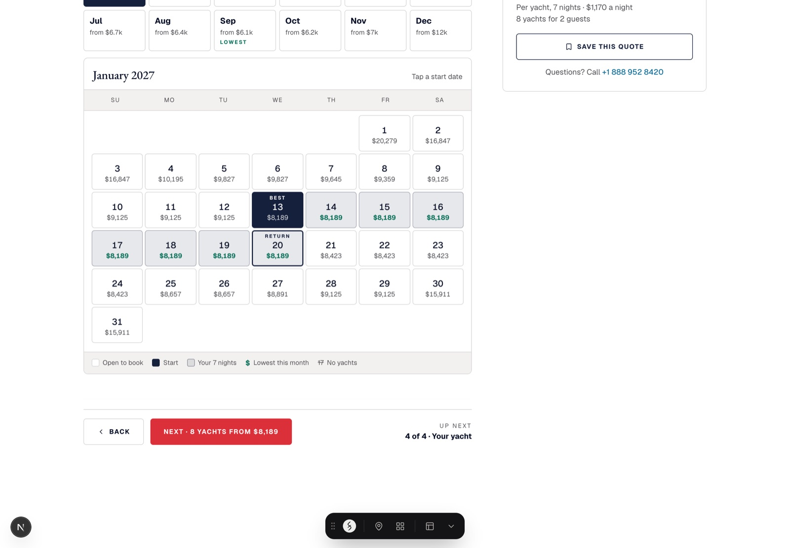
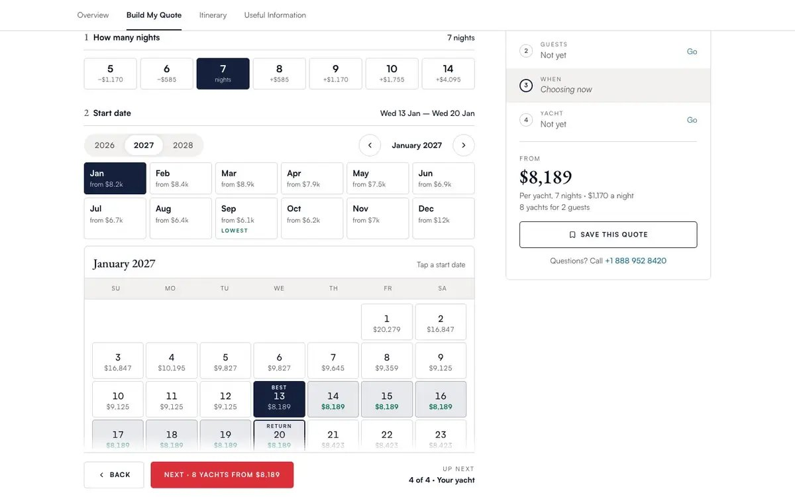
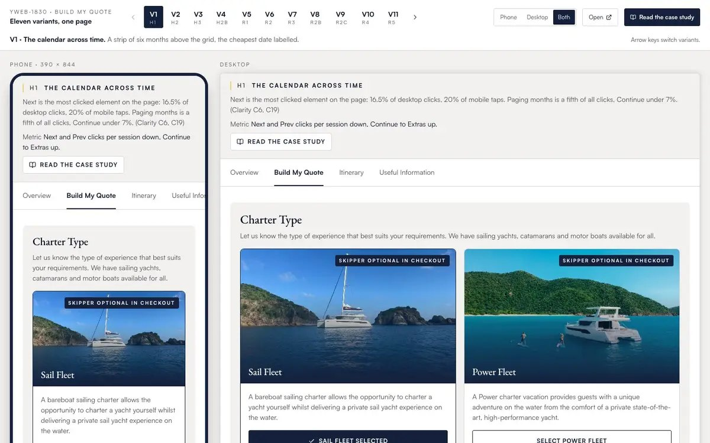
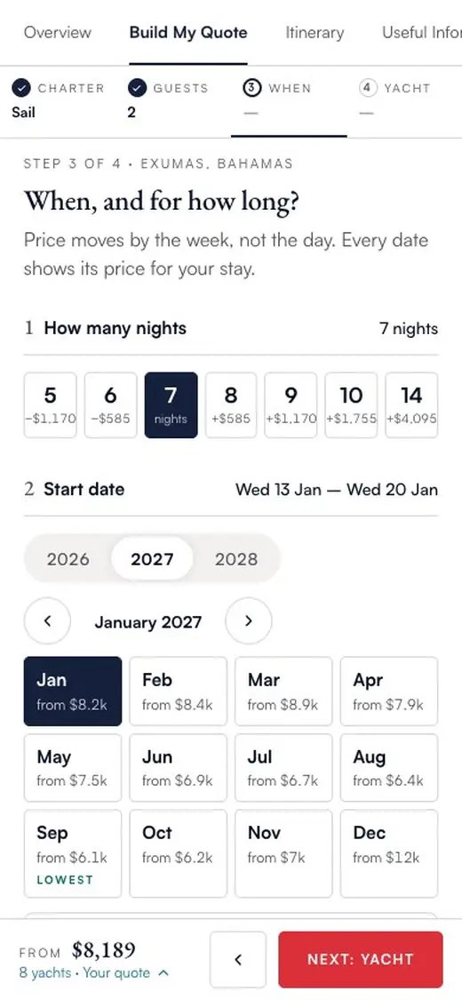
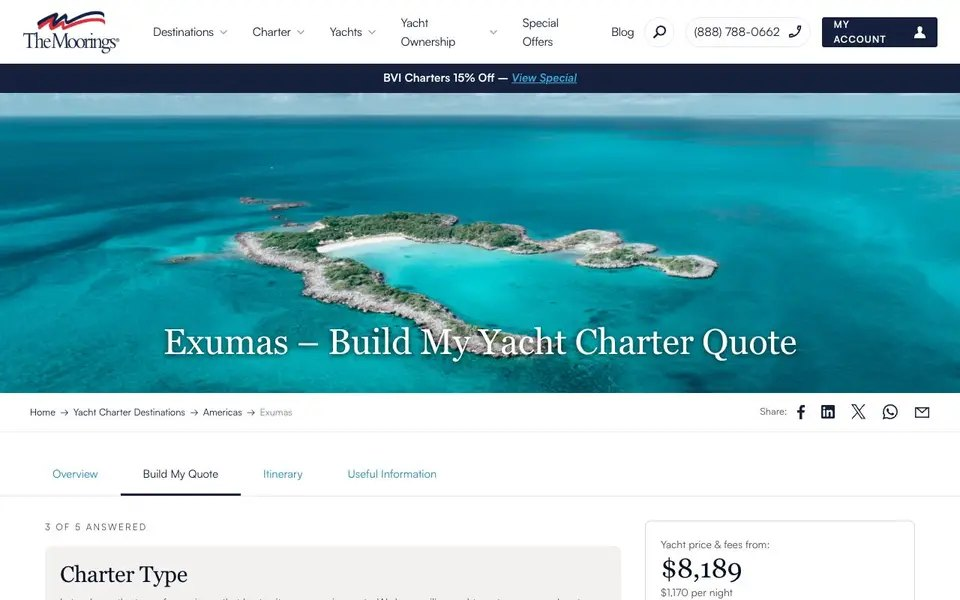

Price the stay, not the date
The Moorings sells yacht charters: pick a destination, a boat and a week, bareboat or with a skipper or crew. It is one of the travel brands of Travelopia, a group I design for. Build My Quote is the form on every destination page of moorings.com.
The quote builder is the most visited page on a yacht charter site, and its calendar is where people gave up. I rebuilt it so every date carries the price of your whole stay. Eleven variants later, two flows are in front of 48 real bookers.

The page made people hunt, one month at a time
The session recordings pointed at one place, three times. Next and Prev were a fifth of every click: people paged through months looking for a price the page showed one month at a time. Two in five dead clicks landed on a pencil with nothing behind it. Half of desktop visitors never reached the bottom half, and phones, where most of the traffic is, were worse.
Four clicks hunting for a price, for every one click that moved forward. That ratio was the whole brief.Five decisions inside the calendar
- No Next and no Prev. The most clicked control on the page is not a sign people love it. Months stack, and a strip of month tiles with from-prices jumps to one.
- A price on every bookable date, in ordinary ink. Booking does the same.
- One label, not a heat map. The cheapest date in the month says Best; Google Flights uses exactly one colour for cheapest.
- No red and green together. The sales desk saw customers read the pair backwards, and it is the one pair colour-blind users cannot separate.
- The stay, not the night. Seven nights from the 13th means all seven must be open; the figure on the 13th is what those seven cost.

Eleven variants, one hypothesis each
The first four change one thing each and leave the rest as production, so a test can isolate the effect. The next seven rethink the flow phone-first, each solving every finding by a different model: a quote bar, one question at a time, a price timeline, a search that refines, a guided entry sheet.

The one I got wrong
In the guided variant the month tiles sit above the day grid. On a desktop that reads fine. On a phone, tapping a month changes something below the fold, so the page looks like it did nothing. I watched it happen and it reads as broken. The next variant got its own picker: a month, then its days, in the same space, with a link back to the months.

Watch real bookers before the A/B test
Two arms go forward to an A/B test: one that lets you compare, one that leads you. First, two flows at opposite ends are in an unmoderated user test: 48 people on UserTesting, desktop and phone run separately, the same task for everyone, seven nights in March for four. One question: do people want the form, or a guided way in? A clearly preferred flow goes on to the production test.
